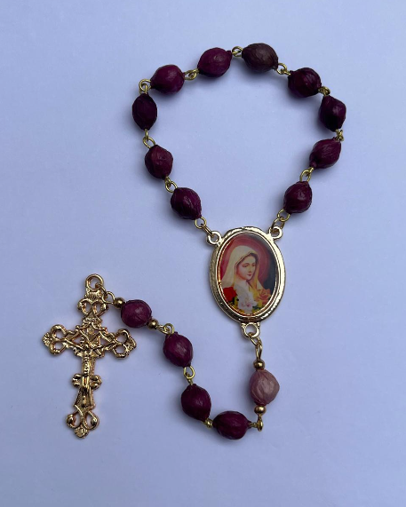
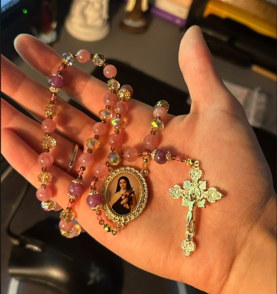

Santo André, SP · envio para todo o Brasil
Terços feitos com oração.
Cada terço é montado à mão e personalizado do seu jeito. Para presentear, para rezar, para guardar a vida inteira.


- Feito à mãoem Santo André, SP
- Personalizadocores, contas e medalha do seu jeito
- Enviopara todo o Brasil
Feito à mão, de verdade
Primeiro uma conversa. Depois, um terço só seu.
A Rosabelle é uma marca artesanal de Santo André, em São Paulo, que faz à mão terços, pulseiras e artigos devocionais católicos.
“O presente que todo católico ama receber.”
Como pedir
Seu terço em quatro passos
Chame no WhatsApp
Conte para quem é o terço e qual a ocasião.
Escolha o modelo
Contas, cores, cruz e medalha do santo de devoção.
Combine os detalhes
Valor, forma de pagamento e prazo de produção, direto com a Rosabelle.
Receba em casa
Seu terço segue para qualquer lugar do Brasil.
Depoimentos
Quem recebeu, conta.
“Que delicadeza este terço feito pela @rosabelle.tercos, de Nossa Senhora de Guadalupe. Perfeito!”
“Rezando o rosário com o terço lá da @rosabelle.tercos. Que benção! Muita gratidão.”
Mais depoimentos no destaque “Depoimentos” do Instagram.
Dúvidas
Perguntas frequentes
Ainda não sabe rezar o terço? No Instagram da Rosabelle há vídeos curtos que ensinam em poucos minutos, e o guia “As Orações do Terço”.
Os terços são feitos à mão?
Sim. Cada terço é montado à mão pela Rosabelle, em Santo André/SP.
Posso personalizar o meu terço?
Sim. É a especialidade da casa. Você combina contas, cores e medalha pelo WhatsApp.
Vocês enviam para todo o Brasil?
Sim, o envio é para todo o Brasil. O valor do frete é informado no momento do pedido.
Quanto custa e qual o prazo?
Os valores e o prazo de produção dependem do modelo escolhido. Fale com a Rosabelle no WhatsApp para receber a informação exata.
Quais as formas de pagamento?
As formas de pagamento são combinadas direto no atendimento pelo WhatsApp.
Vamos montar o seu terço?
Chame a Rosabelle no WhatsApp e conte quem vai receber o presente.
Pedir no WhatsApp